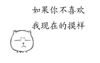

转自中国连珠网
第50期全日本连珠名人战挑战五番对局于2012年10月20日开赛。由9月在A级联赛上以7胜2和不败战绩夺得挑战权的原名人中村茂九段挑战新生代名人大角友希八段。
20日，在大角名人主场滋贺县守山市市民会馆，挑战五番胜负首局猜先，中村九段猜得先手，开溪月局要8打，大角名人选择执黑。黑33手白投了。第二局大角名人开浦月局要6打，中村九段仍然执白应对，79手和棋。
至此，主场作战的大角名人1胜1和，只要再取得一分即可卫冕。24届名人位得主中村九段，12月将回到自己的主场东京都，在以往4次以挑战者身份进行五番对局的争夺中12胜2和2负，夺名人位如探囊取物，从未失败过，本次比赛前两局1负1和，遇到了新生代棋手的强烈抵抗，要想重坐名人宝座，压力不小，必须打满5局，并且不容有失。
棋谱详见励精连珠教室
第50期全日本连珠名人战挑战赛
#1 第50期全日本连珠名人战挑战赛作者：掌棋宣传员 发表时间：2012-10-22 12:24:15
黑:大角友希 1 182分钟
白:中村茂 0 186分钟
黑:大角友希 0.5 181分钟
白:中村茂 0.5 210分钟
［ 华夏小宝 于 2012-10-22 12:30:52 时花20金币送鲜花一朵］
［ 裁决殿雪月 于 2012-10-22 14:23:36 时花20金币送鲜花一朵］
［ 釣鱼岛岛主 于 2012-10-22 14:33:44 时花20金币送鲜花一朵］
［ 釣鱼岛岛主 于 2012-10-22 14:33:44 时花20金币送鲜花一朵］
［ 釣鱼岛岛主 于 2012-10-22 14:33:44 时花20金币送鲜花一朵］
［ 釣鱼岛岛主 于 2012-10-22 14:33:44 时花20金币送鲜花一朵］
［ 釣鱼岛岛主 于 2012-10-22 14:33:44 时花20金币送鲜花一朵］
#2 Re:掌棋宣传员【==第50期全日本连珠名人战挑战赛==】作者：华夏小宝 发表时间：2012-10-22 18:25:30
请问，在爱五子网怎么插入图片啊，可以告诉我么？
#3 Re:第50期全日本连珠名人战挑战赛作者：华夏小宝 发表时间：2012-10-22 18:27:56
#4 Re:华夏小宝【==Re:掌棋宣传员【==第50期全日本连珠名人战挑战赛==】==】作者：雨过云舒 发表时间：2012-10-22 18:30:40
引用：点一楼的回复，然后下方会有增加附件的选项，之后把图片上传即可，就像这样，不过不记得有没有威望限制了。
原文由 华夏小宝 发表于 2012-10-22 18:25:30 :请问，在爱五子网怎么插入图片啊，可以告诉我么？
［ 华夏小宝 于 2012-10-22 18:36:50 时花20金币送鲜花一朵］
#5 Re:雨过云舒【==Re:华夏小宝【==Re:掌棋宣传员【==第50期全日本连珠名人战挑战赛==】==】==】作者：华夏小宝 发表时间：2012-10-22 18:38:00
引用：杯具啊，要10个威望，哎，我才两个。
原文由 雨过云舒 发表于 2012-10-22 18:30:40 :引用：点一楼的回复，然后下方会有增加附件的选项，之后把图片上传即可，就像这样，不过不记得有没有威望限制了。
原文由 华夏小宝 发表于 2012-10-22 18:25:30 :请问，在爱五子网怎么插入图片啊，可以告诉我么？
［ 华夏小宝 于 2012-10-22 18:36:50 时花20金币送鲜花一朵］
#6 Re:第50期全日本连珠名人战挑战赛作者：继续沉醉 发表时间：2012-10-23 12:50:14
不知中村这次能不能创造奇迹